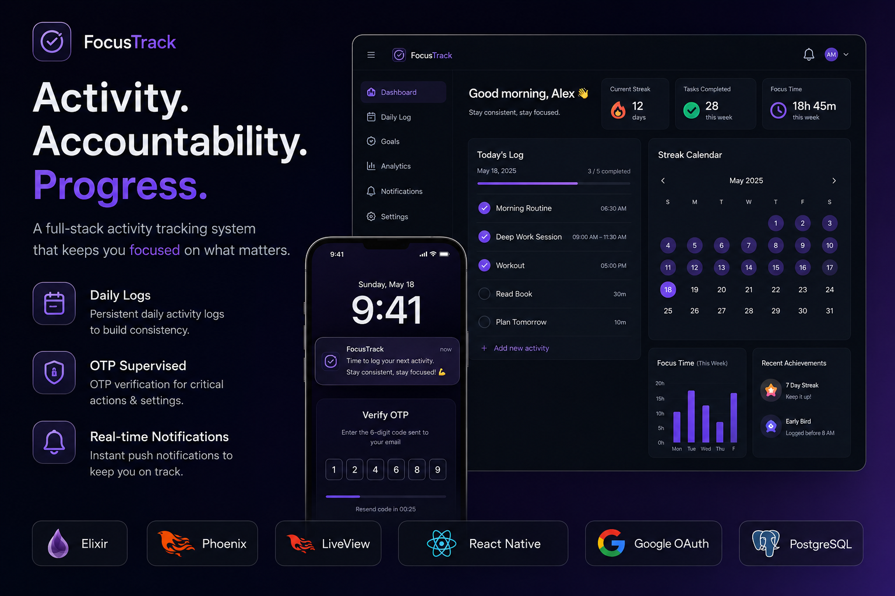
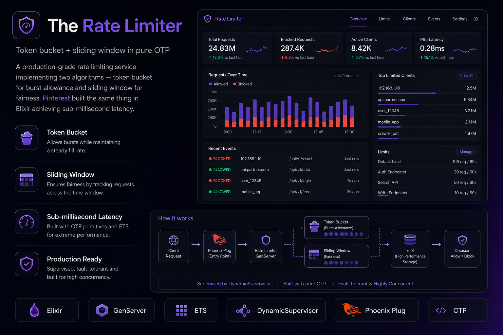
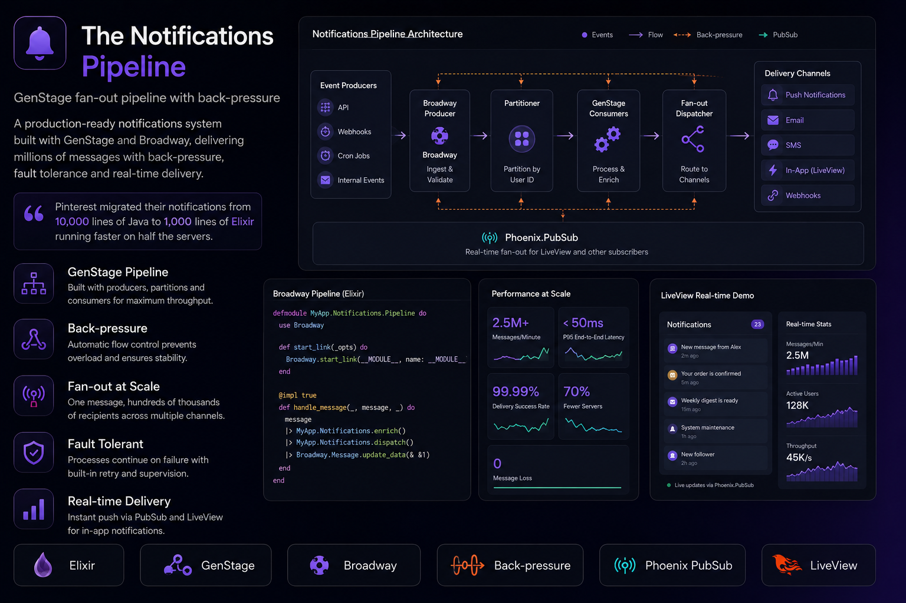
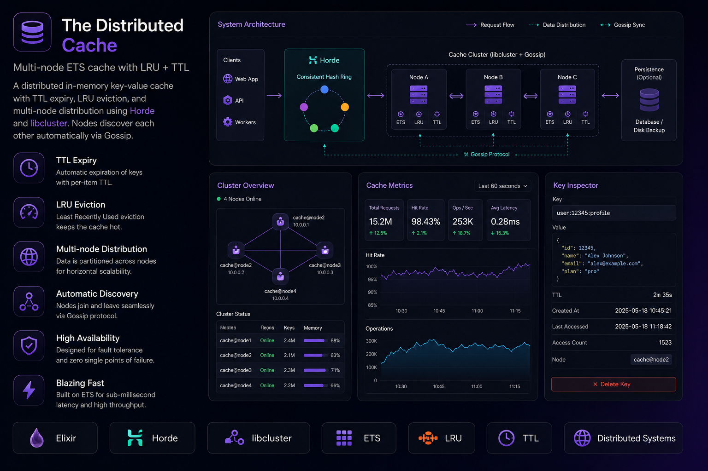
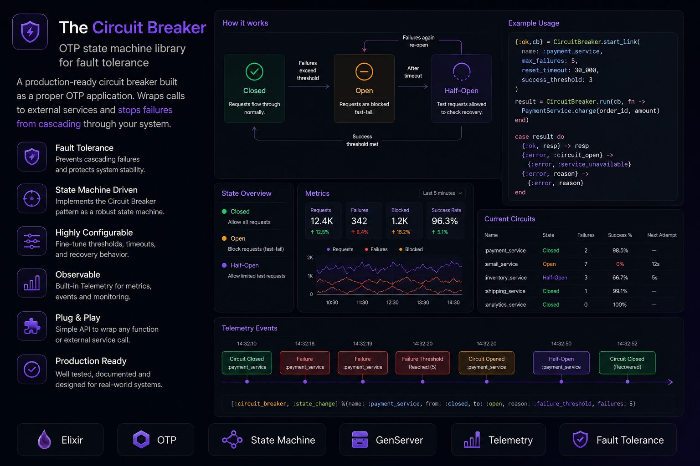
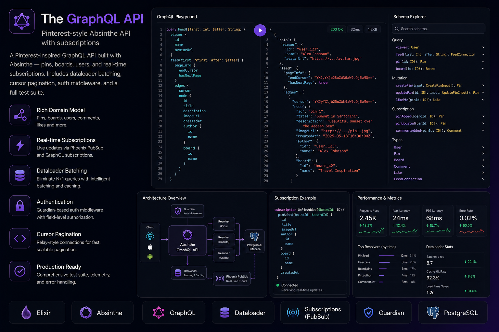

I am Jawad,
a Software Engineer
& backend developer
crafting powerful digital
solutions from Pakistan.
About
Passionate Software Engineer with a strong foundation in backend development, driven by curiosity, creativity, and a mission to build impactful digital solutions. Always eager to learn, grow, and contribute meaningfully to innovative projects. Skilled in modern technologies like Elixir, Java, and the MERN stack, with hands-on experience in real-world applications across fintech and mobile development.
Download CVExpertise
- Backend development
- mobile apps
- Elixir
- Java
- MERN
- Database
- Visualisation
Skills
Experience
Regbits
Associate Software Engineer
December 2024 - Present
At RegBits, I work as an Associate Software Engineer (Backend), contributing to scalable fintech solutions. I’ve played a key role in developing and maintaining backend systems for projects like Bamboo Wallet and AMI. My responsibilities include API development, database optimization, and ensuring seamless system integration. I actively collaborate with cross-functional teams to deliver high-quality, reliable software
GitInit
Android developer
Jan 2023 - Jan 2024
At GitInit, I served as Co-founder and Android Developer, where I collaborated with a fellow university student to launch a tech startup aimed at digitizing local businesses. I led the end-to-end development of custom Android apps for clients like retail shops and restaurants. My role involved full project lifecycle management, from gathering requirements to deployment and support, while ensuring strong client relations and delivering innovative, high-quality solutions.
Education
FAST-NUCES
Bacheolers in Software Engineering
April 2024
I pursued my Bachelor's in Software Engineering at FAST National University, Faisalabad, one of Pakistan’s top institutions for computer science and engineering. During my time there, I built a strong foundation in programming, databases, and software development methodologies. I actively participated in academic projects, tech societies, and internships that enriched my practical experience. The university environment fostered my passion for problem-solving and innovation.
DataCamp
Professional Certifications
August 2024
Completed certifications in Data Science, Python Programming, and Backend Development. Gained practical skills through interactive projects and real-world datasets, enhancing proficiency in data analysis, machine learning, and modern development practices.
Recent Works
Here are some of my favorite projects I have done lately.
Focus
Tracker
A full-stack activity tracker built with Elixir/Phoenix and React Native. Features an OTP-supervised GenServer notification scheduler with persistent browser and mobile alerts, Phoenix LiveView dashboards, Google OAuth, Guardian JWT, PubSub and Channels.

Rate
Limiter Service
A production-grade rate limiting service in pure Elixir implementing token-bucket and sliding-window algorithms. Uses one GenServer per user and ETS for microsecond reads, exposed as a plug usable in any Phoenix router.

Notifications
Fan-out Pipeline
A high-throughput notification delivery system using GenStage and Broadway with priority queues and back-pressure. Includes a LiveView dashboard for throughput and queue depth.

Distributed Key-Value
Cache
An in-memory distributed cache with TTL, LRU eviction and multi-node distribution using Horde and libcluster. Local ETS reads keep latency in microseconds while invalidation broadcasts across nodes.

Circuit
Breaker Library
A fault-tolerance OTP library providing closed/open/half-open circuit state machines, DynamicSupervisor-managed workers, Telemetry events and optional fallback handlers for resilient services.

GraphQL API
with Absinthe
A Pinterest-inspired GraphQL API built with Absinthe: pins, boards, users and real-time subscriptions. Uses Dataloader batching, cursor pagination, and auth middleware.

Get In Touch
I love to hear from you. Whether you have a question or just want to chat about design, tech & art — shoot me a message.